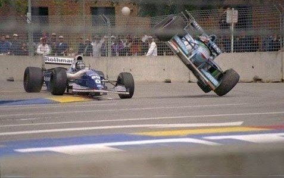

La Triple Corona
La Triple Corona en el mundo del automovilismo es un logro no reconocido ofialmente y que hasta la fecha solo ha logrado un piloto hasta el fecha.


La Triple Corona en el mundo del automovilismo es un logro no reconocido ofialmente y que hasta la fecha solo ha logrado un piloto hasta el fecha.
Nos remontamos a 1994 cuando el GP de Australia era el último de la temporada y se corria en Adelaide, en lugar del actual Albert Park de Melbourne.
Aqui habra curiosidades sobre la Formula 1.

Aqui habra curiosidades sobre la Formula 1.